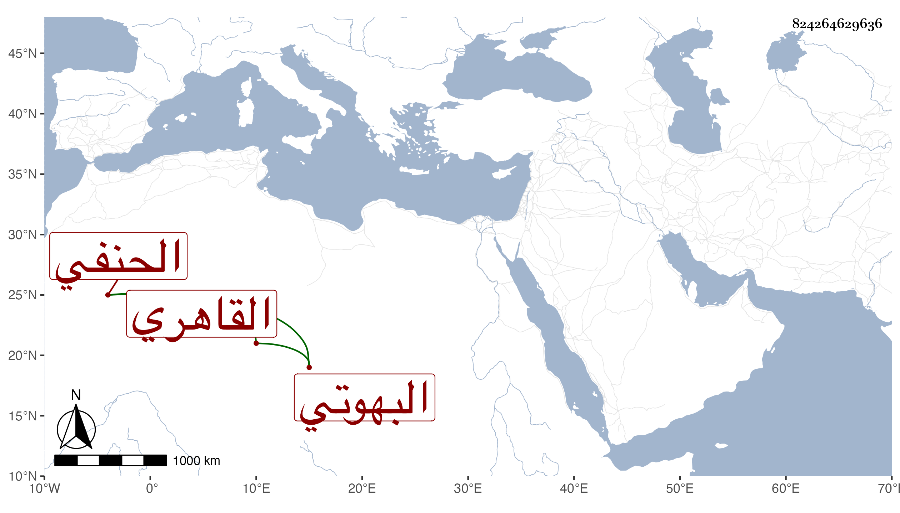

0902Sakhawi.DawLamic.ITO20230111-ara1.EIS1600.824264629636
Biography ID: 824264629636
أحمد بن عبد الله بن محمد بن محمد الصدر أبو المعالي بن الجمال أبي محمد بن الشرف بن ناصر الدين المقدادي البهوتي ثم القاهري الحنفي ، مات في أواخر ربيع الآخر سنة أربع وثمانين بعد أن توعك مدة وكان ينتمي للمحب بن الأشقر وللعضدي الصيرامي بل كان يزعم أنه من جماعة والده النظام وأنه كان هو ووالده ممن ينوب عن قضاة الحنفية . وقد كتب في التوقيع وسمع ختم البخاري في الظاهرية وتردد إلى الأكابر وكان يحكي من أحوال ذاك الدور الكثير وربما استقل ولم يصدق ثم بعد انقضاء تلك الحلبة انعزل سامحه الله وإيانا .
